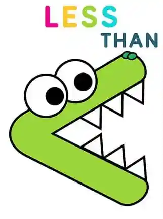
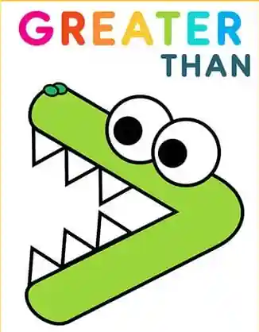

📱 🔄
Please Rotate Your iPad
This game is designed to be played horizontally in landscape orientation.
Which side has more?

OR

)" class="w-full h-full object-contain pointer-events-none select-none rounded-xl" draggable="false">